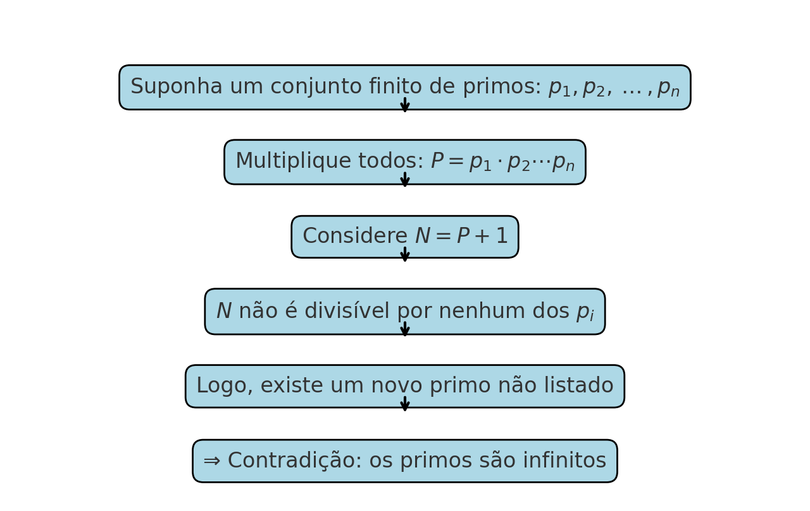
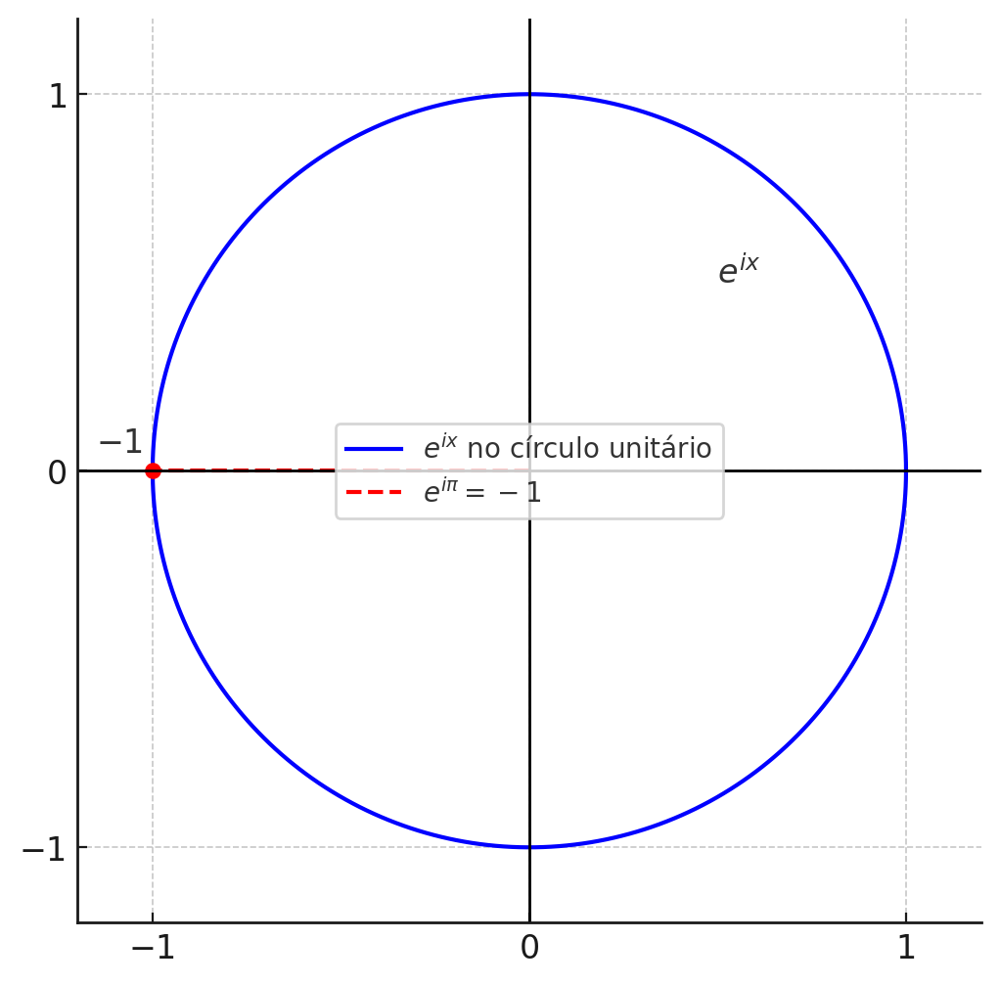

📘 🧮 A Beleza é o Primeiro Teste — G. H. Hardy e a Matemática como Arte
← Voltar para o Guia de Leitura de Matemática 🧭 🧮
← Voltar para a Seção de Matemática 🧮
1 📘 🧮 A Beleza é o Primeiro Teste — G. H. Hardy e a Matemática como Arte
“A beleza é o primeiro teste: não há lugar permanente no mundo para matemática feia.”
— G. H. Hardy, em A Apologia de um Matemático

Godfrey Harold Hardy (1877–1947) foi um dos maiores matemáticos britânicos do início do século XX. Graduou-se em Trinity College, Cambridge, tornando-se fellow em 1900 e contribuindo significativamente para a teoria dos números e a análise matemática.
Hardy é conhecido por sua colaboração histórica com John E. Littlewood, e por ter sido mentor de Srinivasa Ramanujan, tornando-se um dos protagonistas da matemática pela sua sensibilidade à beleza matemática. Sua obra mais famosa, A Mathematician’s Apology (1940), justifica a matemática pura como um ato criativo — uma defesa apaixonada da “beleza antes da utilidade”.
Ele recebeu importantes distinções, como a Royal Medal (1920), De Morgan Medal (1929) e a Copley Medal (1947), confirmando sua influência atemporal no panorama matemático.
1.1 Introdução
Poucas frases capturam com tanta força o espírito da matemática pura quanto essa citação de G. H. Hardy. Para Hardy, a matemática deveria ser apreciada como se aprecia uma sinfonia, um poema ou uma obra de arte. Ele acreditava que, entre os muitos critérios possíveis para julgar uma teoria, a beleza era o mais fundamental — e o primeiro a ser invocado.
1.2 A Estética na Matemática Pura
Na matemática pura, a busca não é utilitária, mas sim conceitual, estrutural, abstrata. O matemático pergunta: isso é coerente? profundo? inevitável? belo? Uma teoria que resolve um problema, mas o faz de maneira feia ou disforme, tende a ser esquecida.
Hardy via a matemática como arte formal baseada em ideias abstratas. A beleza, nesse contexto, se manifesta de várias formas:
- Simplicidade inesperada.
- Generalidade elegante.
- Conexões surpreendentes entre áreas distintas.
- Demonstrações inevitáveis, que “não poderiam ser de outro jeito”.
1.3 Exemplos Clássicos de Beleza Matemática
1.3.1 A Prova de Euclides da Infinitude dos Primos
A clássica demonstração de Euclides é um ícone de elegância:
\[ \text{Suponha que haja apenas } p_1, p_2, \dots, p_n. \] \[ \text{Considere } N = p_1 p_2 \dots p_n + 1. \]
Esse número \(N\) não é divisível por nenhum dos \(p_i\), levando a um novo primo. A conclusão é inevitável, e o raciocínio, direto. Não há gordura. Não há excessos. Apenas beleza.
1.3.1.1 🔷 Diagrama ilustrativo da ideia de Euclides
A demonstração de Euclides pode ser representada visualmente:
suponha um conjunto finito de primos → multiplique → adicione 1 → aparece um novo primo.

1.3.2 A Identidade de Euler
\[ \boxed{e^{i\pi} + 1 = 0} \]
Cinco das constantes mais fundamentais da matemática — \(e\), \(i\), \(\pi\), \(1\), \(0\) — reunidas numa única equação. Um encontro improvável e ainda assim perfeitamente natural.
1.3.2.1 🔷 Gráfico da Identidade de Euler
A ponte entre exponenciais complexas e funções trigonométricas é dada pela fórmula de Euler:
\[ e^{ix} = \cos(x) + i \sin(x) \]
Essa equação mostra que \(e^{ix}\) descreve um ponto no círculo unitário do plano complexo, com \(\cos(x)\) como parte real e \(\sin(x)\) como parte imaginária.
A seguir, representamos graficamente essas duas componentes separadas.
1.3.2.2 🔷 Representação geométrica de \(e^{ix}\) no plano complexo
Isso significa que \(e^{ix}\) descreve um ponto girando no círculo unitário do plano complexo —
com \(\cos(x)\) como a parte real e \(\sin(x)\) como a parte imaginária.

1.3.3 A Prova de Wiles do Último Teorema de Fermat
Enunciado:
Não existem inteiros positivos \(x, y, z\) que satisfaçam a equação
\[ x^n + y^n = z^n \] para qualquer inteiro \(n > 2\).
O teorema foi enunciado por Pierre de Fermat em 1637 em uma margem de livro, com a famosa nota:
> “Descobri uma demonstração verdadeiramente maravilhosa, mas esta margem é estreita demais para contê-la.”
A afirmação permaneceu sem prova por mais de 350 anos.
Apesar da complexidade técnica, a demonstração de Andrew Wiles é bela por outra razão:
ela unifica conceitos profundamente distintos, como curvas elípticas e formas modulares.
A visão abrangente que ela proporciona é, em si, estética.
1.3.3.1 🔷 Diagrama conceitual da prova de Wiles

O diagrama resume a genialidade da abordagem de Andrew Wiles ao Último Teorema de Fermat.
- O ponto de partida é Fermat, com sua famosa afirmação sem demonstração.
- A Conjectura de Taniyama–Shimura entra como ponte inesperada: ela sugere que toda curva elíptica racional é modular.
- A demonstração de Wiles mostrou que, se a conjectura fosse válida para um caso específico, o Teorema de Fermat seria automaticamente verdadeiro.
- Para isso, Wiles estabeleceu conexões profundas entre curvas elípticas e formas modulares.
- A linha de chegada é a demonstração de Wiles, resultado da fusão dessas ideias.
A beleza aqui não está apenas no resultado final, mas na própria arquitetura da prova — interligando áreas antes consideradas distantes.
Como Hardy sugeriu, essa matemática sobrevive porque é bela.
1.3.3.2 🕰️ Cronologia da demonstração de Wiles
- 1637: Fermat enuncia o teorema sem prova.
- Séculos XVIII–XIX: Casos especiais provados para expoentes \(n = 3, 4, 5, 7\), entre outros.
- 1980s: Surgem conexões entre o Teorema de Fermat e a Conjectura de Taniyama–Shimura.
- 1993: Andrew Wiles anuncia uma prova completa — baseada na modularidade de certas curvas elípticas.
- 1994: Uma falha é encontrada, mas Wiles e Taylor corrigem o argumento.
- 1995: A prova é oficialmente aceita e publicada.
O teorema foi finalmente demonstrado usando ferramentas da matemática moderna — não previstas nem remotamente por Fermat.
1.4 A Beleza como Filtro
A frase de Hardy é também uma crítica à matemática feita sem apuro conceitual.
Provas feias, fórmulas artificiais ou estruturas remendadas podem até resolver um problema —
mas raramente sobrevivem ao tempo.
Com o tempo, apenas o que é essencial permanece.
E o essencial, quase sempre, é belo.
1.5 Palavras de Hardy
“A matemática pura é, por sua natureza, uma arte criativa, e não uma arte utilitária.”
“A matemática, como a poesia, deve ser bela. As ideias, como as palavras, devem se encaixar perfeitamente.”
“Não há escapatória: o matemático, como o pintor ou o poeta, deve ser um criador de padrões.”
1.6 ✍️ Comentário Pessoal
Sou formado em matemática pura, e sempre fui apaixonado pela teoria da relatividade, tanto especial quanto geral.
A matemática que estrutura essas teorias físicas é, para mim, de uma beleza indescritível.
Uma das ideias mais marcantes que encontrei foi a noção de quadrivetor velocidade no espaço-tempo quadridimensional.
Perceber que uma grandeza física como a velocidade pode ser expressa como um vetor no espaço de Minkowski — com a soma quadrática de suas componentes igual a \(c^2\) — me revelou algo de extrema profundidade.
Quando compreendi que, para qualquer corpo com massa, a norma do quadrivetor velocidade é sempre \(c\), entendi também o seguinte:
se estamos em repouso, nossa velocidade espacial é zero, e nossa velocidade temporal é \(c\);
à medida que nos movemos, parte dessa “velocidade total” é transferida ao espaço, reduzindo nossa velocidade no tempo.
Mas a soma vetorial — no sentido da métrica pseudo-euclideana — permanece constante.
Isso implica, de forma direta, a dilatação temporal: envelhecemos menos quando estamos em movimento.
Mais tarde, ao estudar relatividade geral, descobri que o espaço-tempo é uma variedade diferencial pseudo-riemanniana, com uma métrica que se curva em resposta à presença de massa e energia.
A frase de Wheeler me acompanhou desde então:
“O espaço diz à matéria como ela deve se mover, e a matéria diz ao espaço como ele deve se curvar.”
Essa síntese é, para mim, de uma beleza ímpar.
Também me encanta a ideia de que a física ainda busca uma teoria unificada — algo que integre a relatividade geral com a mecânica quântica.
Se um dia conseguirmos explicar o macro e o micro com uma só estrutura matemática coerente, isso será, sem dúvida, um triunfo supremo do pensamento humano.
Por fim, como matemático, reconheço a mesma beleza nos alicerces formais da própria matemática.
A forma axiomática como desenvolvemos teoremas, estruturas e teorias exige elegância, coerência e inevitabilidade.
Não é por acaso que Hardy disse que a beleza é o primeiro teste.
Essa afirmação não é apenas filosófica — é um critério silencioso que nos guia enquanto provamos.
1.7 Conclusão
A matemática que sobrevive é aquela que inspira.
Para quem vive a matemática pura, onde o valor de uma teoria não se mede pela aplicação, mas pela profundidade,
a frase de Hardy serve como um farol.
Em última instância, a beleza não é um adorno da matemática — é seu critério de permanência.
2 📚 Bibliografia e Leitura Adicional
Hardy no MacTutor History of Mathematics
Uma biografia detalhada sobre sua trajetória e contribuições.G. H. Hardy — Wikipédia
Informações introdutórias em português sobre sua vida e obra.
← Voltar para o Guia de Leitura de Matemática 🧭 🧮
← Voltar para a Seção de Matemática 🧮
Blog do Marcellini — Explorando a Matemática com Rigor e Beleza.
Criado por Blog do Marcellini com ❤️ e código.